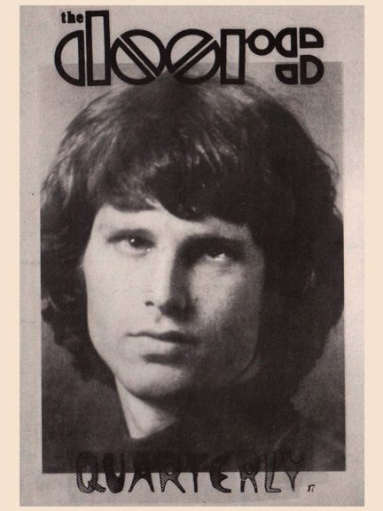

Depending on your computer's safety settings (antivirus, firewall, etc.) the download may generate a standard warning, that is because the magazine is a flipbook in the .EXE file format. We guarantee that the file is absolutely harmless and perfectly safe. |
A new window will open with the magazine for you to read online without the need to download it onto your computer. Again, we guarantee that it's absolutely harmless and perfectly safe. |
|||
|  | The Doors Quarterly Magazine #17
got published on April 14th, 1988. The envelopes I sent
the magazines in all had a little sensation pasted onto them: the one and only Jim Morrison stamp, published on the very day of this DQ's release in Germany. Could any surprise have been any better for the readers of the DQ? I wonder how many of you guys still have your envelopes - I've kept the ones that came back from subscribers who forgot to tell me their new address; I still have a full sheet of 25 stamps framed on my wall. Many years later I got a call from Paul Rothchild, asking for a sheet of stamps for his collection, and thanks to some fortunate circumstances I was able to get him one. By the way, 20.000.000 stamps got printed by the "Deutsche Bundespost" ... Because of the stamps (they cost much more than the usual postage for mailing a DQ) there was no money left for the usual free poster, so I added a previously issued poster to the magazines. You'll find all news of these old days on pages 4 & 5 in this DQ, and I could not resist to tell readers about the invitation I had received from Danny Sugerman and Ray Manzarek, to come to Los Angeles in June 1988 and do a "grand tour of L.A." together with them, as Sugerman put it in his letter. The main article of this DQ is Scott Hyder's fine symbolic study Part 2, which was originally written for the C.G. Jung Institute (in Zurich, Switzerland - if I remember well). After the bits on new vinyl bootlegs (most of them useless, yet collector's items nowadays) you'll find a short German article written by Ulrich Heumann, one of the nicest Doors fans I have ever met. Unfortunately he passed away in June 2014. I miss you, Ulrich! Then there's a fascinating article written for LIFE magazine in April 1968 by Fred Powledge, about the importance of The Doors, and additionally it mainly concentrates on the infamous New Haven incident. Among a few more fine articles there's an interview with Ray Manzarek from British SOUNDS magazine, December 1973: "And then the damn fool goes and dies; I don't know how he pulled that one off", mostly about Ray's activities after the break-up of the group. And -last but not least- thanks to Patricia Devaux for the fine photo of the famous bust on Jim's grave (before it got vandalised). For producing this DQ 17 there was no computer around - everything got typed on my ancient electric typewriter and the bigger letters for headings used to be rub-off letters on small plastic sheets or plastic lettering tapes. There was a free (old) poster with it, but I forgot which one of the about 20 different DQ posters available I used for DQ 17. Enjoy your digital version and let us know what you think ... we will continue soon by publishing a digital version of DQ 16. CU and have fun! Thanks to Kevin Chiotis for all of his work! A splendid time is guaranteed for all! And don't forget: Please note that your digital copy of The Doors Quarterly Magazine 17 hasn't been altered in any way. You get it as it was published in April 1988 (!). Be aware that all addresses (private, phone) are certainly no longer valid. Books, vinyl records, CDs and other stuff might not be available anymore. Please do not respond to any of the small ads or blame anyone for incorrect details - all writers just did the best they could do back in early 1988. And all this happened without any computer, any emails and of course without the internet. PS: ... if you would like to obtain an original paper copy of this Doors Quarterly Magazine 17 I have to tell you that unfortunately there are no copies left at all! Thank you! Rainer Moddemann |
|||